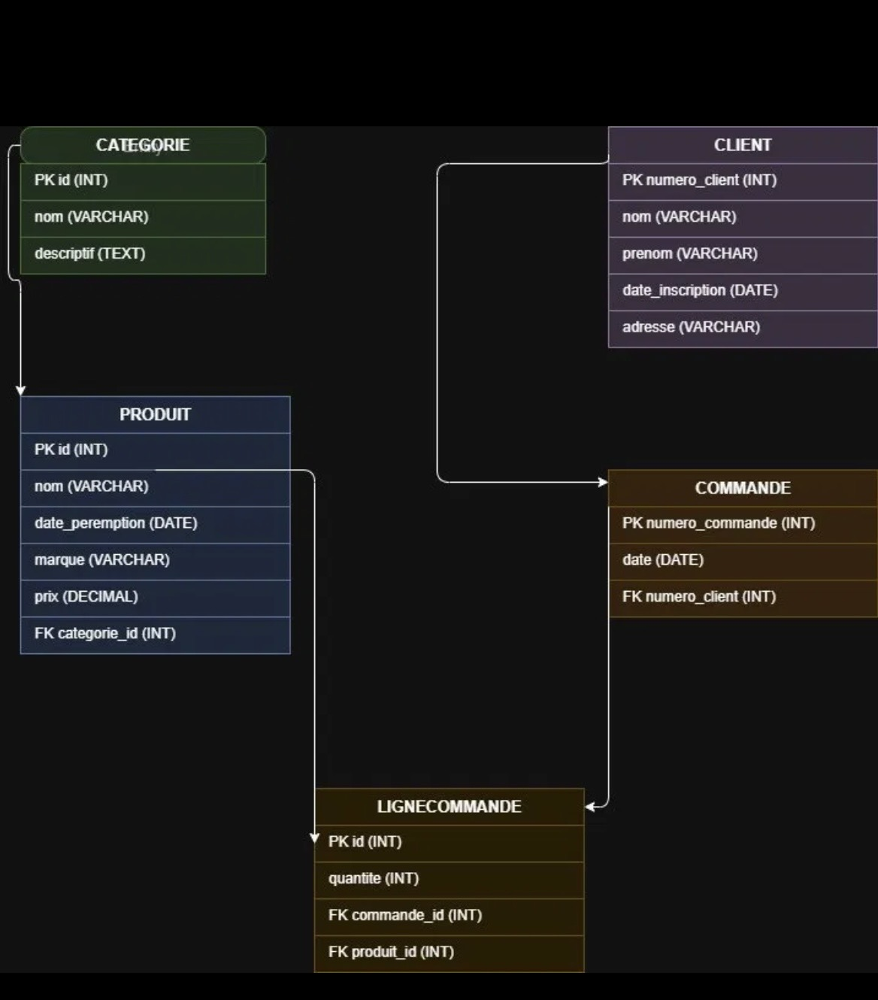
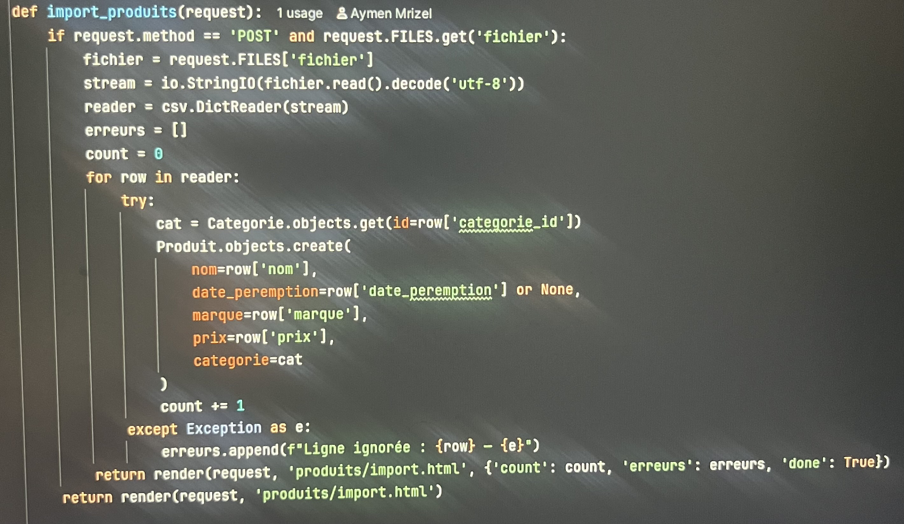
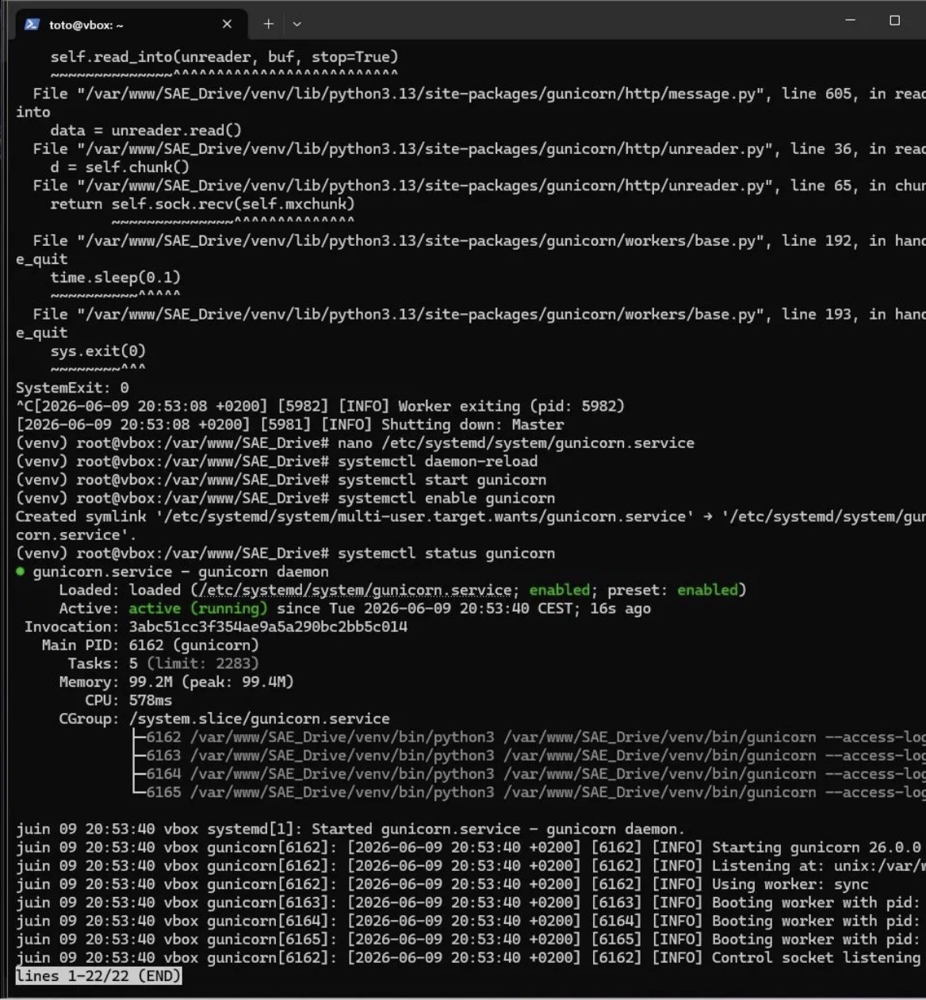
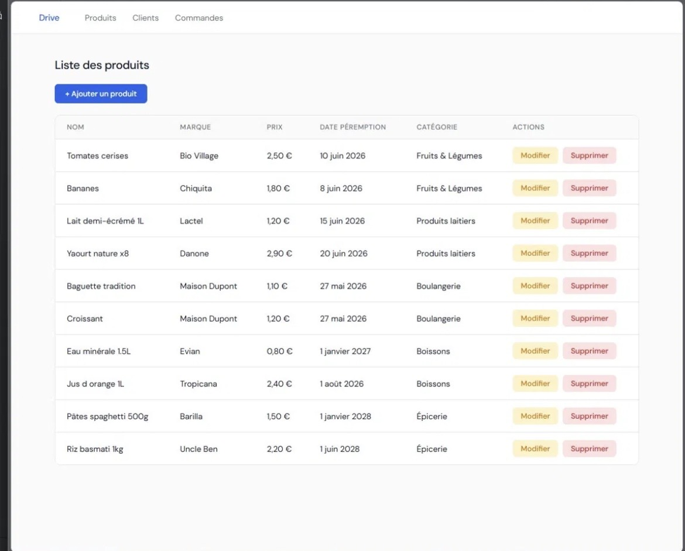
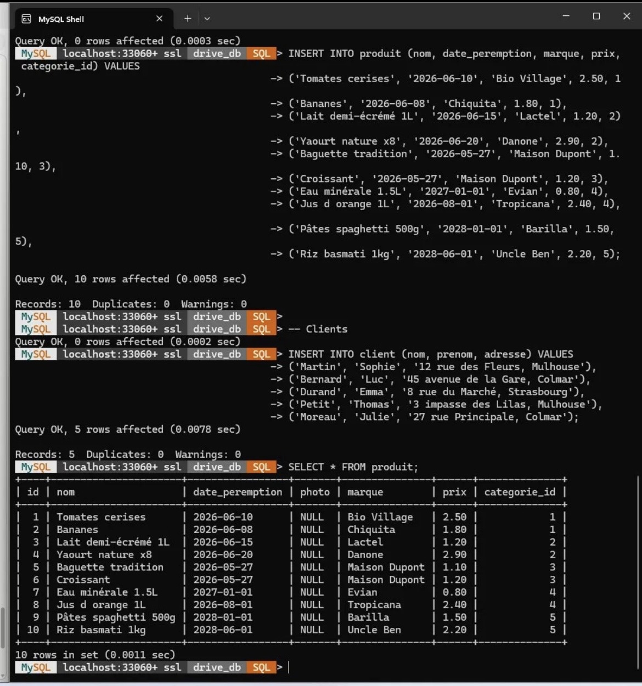
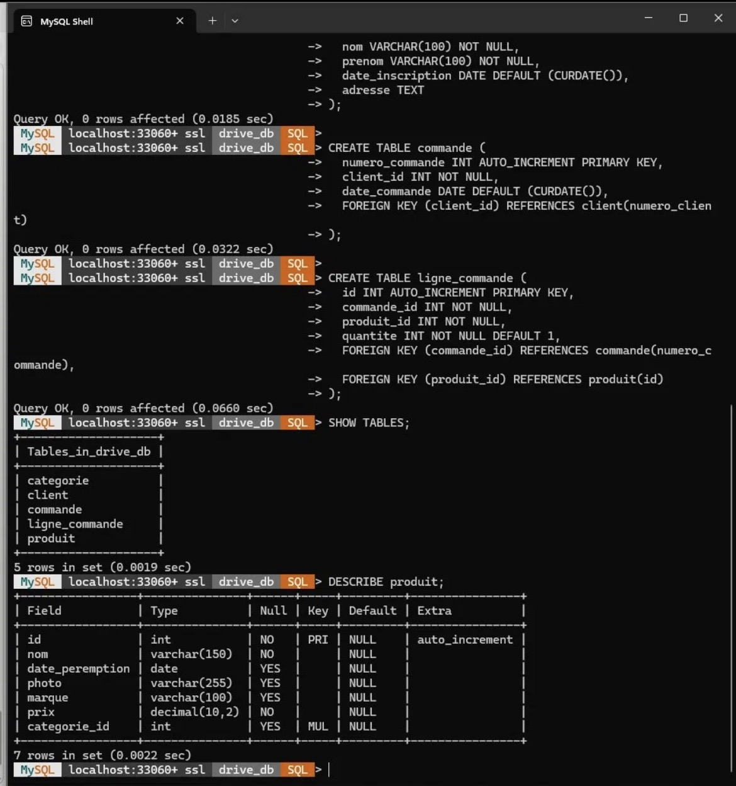

Conception et déploiement d'une application web complète de gestion d'un drive de supermarché. Stack Django + MariaDB sur deux VMs Debian — avec CRUD, import CSV et déploiement Nginx/Gunicorn.
Cadre académique, objectif et contraintes techniques imposées.
managed = False)drive_db)5 tables conçues sur draw.io — j'ai réalisé le schéma complet et défini les clés étrangères.

Détail précis des tâches que j'ai personnellement développées dans ce projet.
ligne_commandemanaged = FalseModelForm + select catégories dynamiquecsv.DictReader après décodage UTF-8Categorie.objects.get()date_inscription auto à la créationsous_total() calculée à la voléecout_total() sur le modèle Commandesous_total() de toutes les lignes associées
Participation au déploiement de la VM2 via SSH — service Gunicorn actif, résolu par Basile en NAT.
/var/www/SAE_Drive, création du venv Pythondjango, gunicorn, mysqlclient (après install de pkg-config libmariadb-dev)systemctl enable gunicorn + systemctl start gunicornSTATIC_ROOT dans settings.py + collectstatic
Démarche de résolution des problèmes techniques concrets rencontrés durant le projet.
Armin avait nommé son modèle LigneProduit alors que le projet utilisait LigneCommande. Les fichiers de migration étaient incompatibles. Solution : suppression complète des migrations (0001, 0002) et du fichier db.sqlite3, puis makemigrations + migrate à zéro.
pip install mysqlclient échouait avec une erreur de compilation C. Cause : bibliothèques système manquantes. Solution : apt install pkg-config libmariadb-dev avant le pip install.
La commande python manage.py collectstatic refusait de s'exécuter. Cause : STATIC_ROOT absent de settings.py. Solution : ajout de STATIC_ROOT = BASE_DIR / 'staticfiles'.
En mode bridged, l'IP statique changeait de sous-réseau selon le réseau utilisé (IUT, maison, hotspot), rendant la connexion Django → MariaDB instable. Résolu par Basile en reconfigurant les VMs en NAT avec adresses statiques et règles de port forwarding.
Compétences du référentiel BUT R&T validées et progression démontrée.
csv.DictReader, décodage UTF-8, gestion d'erreurs et compteur d'insertions réussies.Ce projet m'a permis de passer d'une connaissance théorique de Django à une maîtrise concrète : BDD sur VM distante, contrainte managed = False qui oblige à vraiment comprendre comment Django interagit avec la base, déploiement Nginx/Gunicorn en production via SSH.
La résolution du conflit de migration m'a appris à diagnostiquer rapidement les incohérences dans un projet collaboratif — et à repartir d'un état propre plutôt que de tenter de patcher un état incohérent.
Captures d'écran attestant du fonctionnement réel — BDD peuplée, application accessible, service actif.



SHOW TABLES et CREATE TABLE exécutés manuellement, conformément à la contrainte du professeur.SAÉ 2.03 was a team project focused on building a full-stack web application for a supermarket drive (online grocery ordering system). Working in a group of three, we designed and deployed a Django application connected to a MariaDB database, hosted across two Debian virtual machines running on VirtualBox.
My personal contributions covered the database relational schema design (5 tables on draw.io), full CRUD operations for Products — including a CSV bulk-import feature using Python's csv.DictReader with UTF-8 decoding and error handling — Customers CRUD, and Order Lines CRUD with on-the-fly cost calculation methods computed without storing redundant data in the database.
A key technical constraint imposed by the professor was that Django must not create database tables — all tables were created manually using raw SQL, with models set to managed = False. I also participated in the deployment phase: I connected to the Debian VM via SSH from Windows, set up a Python virtual environment, configured and activated Gunicorn as a systemd service, and resolved a missing system library blocking mysqlclient installation. I encountered inter-VM networking issues related to bridged adapter mode and static IPs across different networks — this was ultimately fixed by Basile, who reconfigured both VMs in NAT mode with port forwarding rules for a stable production setup.
This project strengthened my skills in web application development, relational database design, collaborative version control with Git, Linux server deployment via SSH, and troubleshooting real infrastructure problems — all core competencies of the BUT Réseaux & Télécommunications program.